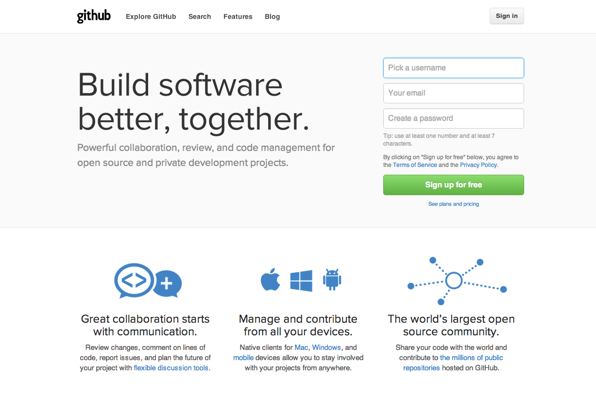
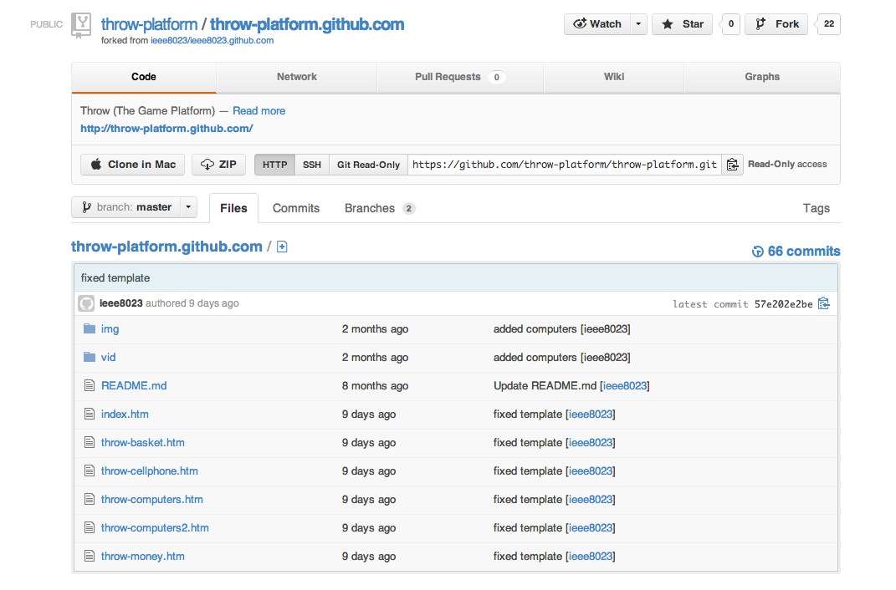

GitHub is the best place to share code with friends, co-workers, classmates, and complete strangers. Over three million people use GitHub to build amazing things together. -Github.com
Github is a great way to share your code. With its huge network, the possibilities are limitless. The first step is to create and setup your profile.
In order to fork our project you need to verify your email address. They should automatically send it to you. If you do not see it in your email then go to account settings (middle image above on top right corner of github's website). Click emails on the left hand side of the screen. This screen will tell you whether or not your email has been verified by github.
After your email has been verified, it is now time to fork the throw-platform project on Github. Forking the project will create a repository of the project and enable you to edit and create to your hearts desire.
Clicking the link above will bring you to the project page. It is now time for you to fork your project and get coding! In the top right hand corner of the project screen click fork.
There are a few things to do after forking throw-platform. At your new throw-platform repository, click the settings button on the right hand side of the screen. In the first box on the right, change your repository name to:
Visit the URL and get started!